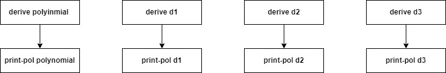
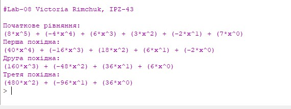
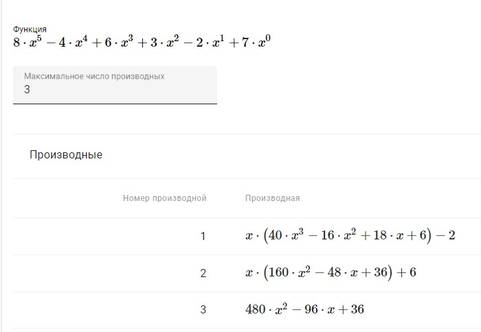

Лабораторна робота №8
Тема: Символьні обчислення мовами функціонального програмування. Операції з многочленами
Завдання:
Написати програму символьного диференціювання по одній змінній поліному, який заданий списком своїх коефіцієнтів та степенем у вигляді: . Знайти першу, другу та третю похідні. Результати вивести у вигляді символьного виразу. Значення поліному та його похідних при заданому користувачем значенні змінної не обчислювати.
Опис алгоритму для завдання:
1. Створюємо функцію для обчислення похідної
2. Створюємо функцію для виведення поліному на екран
3. Створюємо функцію polinomial, в яку передаємо список коефіцієнтів
4. Обчислюємо першу похідну початкового рівняння
5. Обчислюємо другу похідну
6. Обчислюємо третю похідну
7. Виводимо результати на екран
Структура програми (HIPPO діаграма):
Обгрунтування вибору середовища та мови
В якості середовища було обрано DrRacket версії 8.2 та мова Racket
Вибір середовища та мови був зумовлений наступним:
Код програми:
(newline)
(newline)
; функція для обчислення похідної
(define (deriv pol)
(if (not (null? (cdr pol)))
(append (list (* (car pol)
(- (length pol) 1))) ; формула похідної x^n = n * x^(n-1)
(deriv (cdr pol)))
'()))
; функція для виводу поліному на екран
(define (print-pol pol)
(if (not (null? pol))
(if (not (= (car pol) 0))
(begin
(display "(")
(display (car pol))
(display "*x^")
(display (- (length pol) 1))
(display ")")
(if (not (null? (cdr pol)))
(begin
(display (if (not (= (cadr pol) 0))" + " ""))
(print-pol (cdr pol)))
(newline))))))
(define polynomial (list 8 -4 6 3 -2 7))
(define d1 (deriv polynomial))
(define d2 (deriv d1))
(define d3 (deriv d2))
(display "Початкове рівняння:\n")
(print-pol polynomial)
(display "Перша похідна:\n")
(print-pol d1)
(display "Друга похідна:\n")
(print-pol d2)
(display "Третя похідна:\n")
(print-pol d3)
Скріншот результатів:
Аналіз достовірності результатів:
Для перевірки достовірності отриманих результатів (знаходження похідних заданого поліному) було використано онлайн калькулятор. Результати знаходження похідних, отримані за допомогою онлайн калькулятора представлені нижче: 
Проаналізувавши отримані результати можна зробити висновок, що результати, отримані за допомогою реалізованих функцій та результати, отримані за допомогою онлайн калькулятора співпали.
Висновки:
В ході виконання даної лабораторної роботи було опановано теоретичні основи символьних обчислень мовами функціонального програмування.Реалізовано програму символьного диференціювання поліному